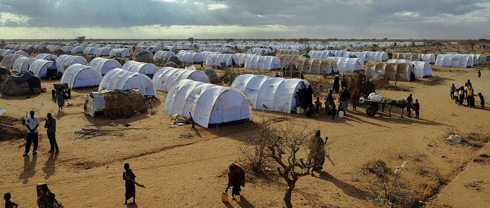
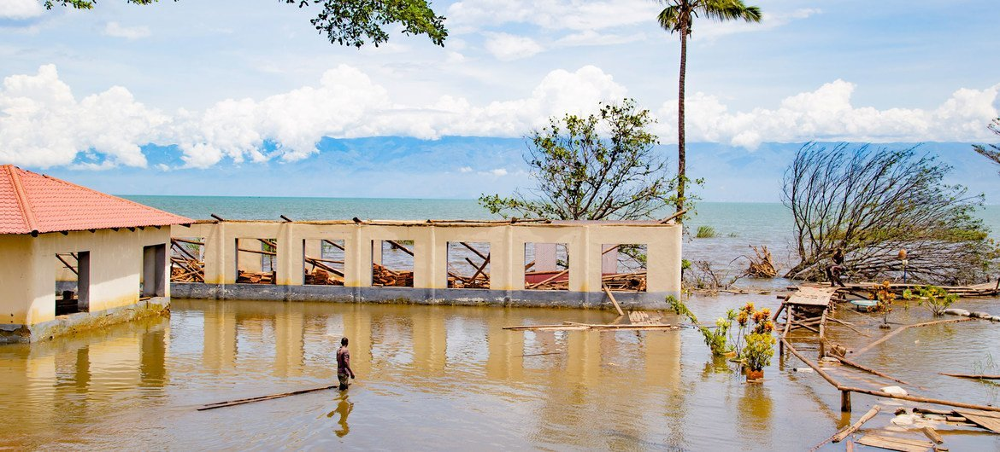

We help people located in East Africa who have been affected by wars, famine, human rights violataions, or other natural disasters like floods, droughts. We guide victims by offering assistance, training, and other material resources that can help them recover from those unfortunate circumstances.
To see all images about our various activities , go to

Since the 2015 crisis in Burundi, more than 200,000 people have fled their homes and are now living in terrible conditions in foreign refugee camps. The same situation is going on actually with the ongoing wars in Congo, where the local population lives in constant fear of rebel attacks. Our association/foundation's mission is to raise funds and take primary action so that it can help provide basic and necessary resources and material like clean water, medicine and school equipment to those highly vulnerable populations.

Our association is highly committed to helping victims of natural disasters like floods, droughts, earthquakes and more. We are actively providing supplies to victims of floods caused by Lake Tanganyika's water level rise. In Gatumba district in Bujumbura, Burundi, more than 1000 homes have been destroyed and thousands of families have been forced to move out of their property. Our association helps organize activities that are centered on raising funds and providing supplies to those displaced families.